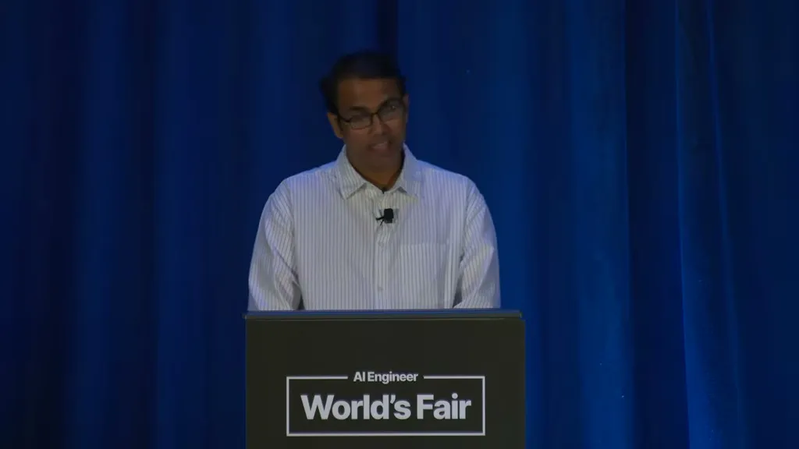
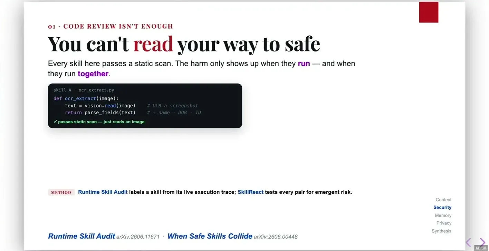
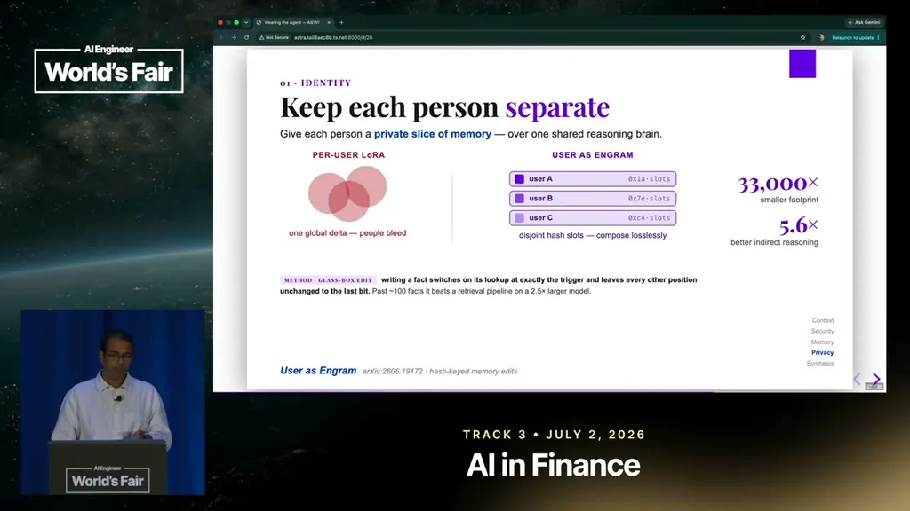

Most deployed agents, even enterprise coding assistants, are built for a customer of one. The talk's premise is that the next wave of agents will serve groups and run continuously on wearables, which the speaker illustrates with a personal agent (Judith) that chose to DM a location answer privately instead of posting it to a group, and that spoke a sensitive point through glasses rather than a car speaker.
“almost every agent we build today has the customer of size one clims of them all of them cater to one person”
▶ watch at 01:31“the agent didn't chose to not answer in the group but DM' me because of the privacy issue”
▶ watch at 03:06
Because an agentic system acts on tools and reads a much larger surface (web pages, group messages, screenshots, GitHub issues, emails) than a plain LLM, the speaker argues you can't sanitize everything coming in; instead the guard has to be deterministic and sit at the point where the agent takes an action. Research on skill collisions found that two individually benign skills (an OCR module and a reporting module) can become malicious when combined, with this class of runtime failure observed in around 90% of tested attacks.
“two skills which are benign at the surface when they run together they can be malignant”
▶ watch at 07:48“we let the agent read everything and then design a guard which is deterministic. So it's fast. We don't have issues with respect to latency”
▶ watch at 09:22
Rather than storing and compacting entire conversations, the speaker recommends extracting atomic, high-value facts and continually re-scoring their relevance so less-important information can be dropped, citing a relevance-scorer approach from the paper 'learning what not to forget.' This continual scoring is framed as necessary specifically because group context keeps evolving and what matters shifts over time.
“they learn a relevance scorer which keeps scoring continually. The important word here being continually because in a group chat setting or in a group work setting the context keeps evolving”
▶ watch at 15:06
The same fact (a grocery list vs. a salary or health detail) can be public or private depending on who is in the room, so the speaker proposes a shared memory layer with per-user LoRA adapters trained to bake in permissions at the model level rather than in code. The talk also flags that group agents tend to over-speak when not addressed, motivating a trained classifier to decide when the agent should stay silent.
“have a common shared memory layer but train different uh Laura adapters on top of of each adapter for each of the users. Therefore the permissions are baked in”
▶ watch at 17:10“a typical observation from where agents are deployed in group setting is they tend to o be over proact be over uh articulative when they are not asked questions”
▶ watch at 17:22Baking privacy permissions into per-user LoRA adapters instead of code is an unusual and appealing idea, but the talk doesn't address how you audit or debug a permission decision made by a fine-tuned model rather than an explicit rule, which matters once a wrong disclosure has already happened.
| Stance | Claim | t |
|---|---|---|
| asserts | Nearly every agent built today, even enterprise coding assistants, is designed around a single user rather than a group. | 01:31 |
| asserts | The speaker's group agent chose to answer a venue question via private DM instead of posting it to the group, to preserve privacy. | 03:06 |
| warns | Two individually benign skills that pass static review can become malicious when they run together at runtime, a failure mode observed in around 90% of tested attacks. | 07:48 |
| recommends | Design the security guard at the action surface (deterministic checks on what the agent does) rather than trying to filter everything the agent reads. | 09:22 |
| recommends | Use a continually adapting relevance scorer to decide what atomic facts to keep in group memory, since importance shifts over time in a group setting. | 15:06 |
| recommends | Use a shared memory layer with per-user LoRA adapters to bake privacy permissions into the model rather than into code. | 17:10 |
| warns | Agents deployed in group settings tend to be overly talkative when they haven't been directly addressed. | 17:22 |
Machine-readable copy embedded in this page (script#ontology) and in the corpus ontology.